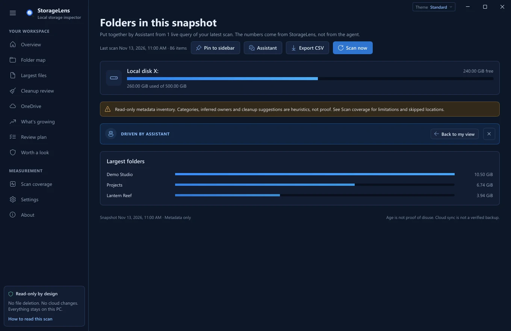
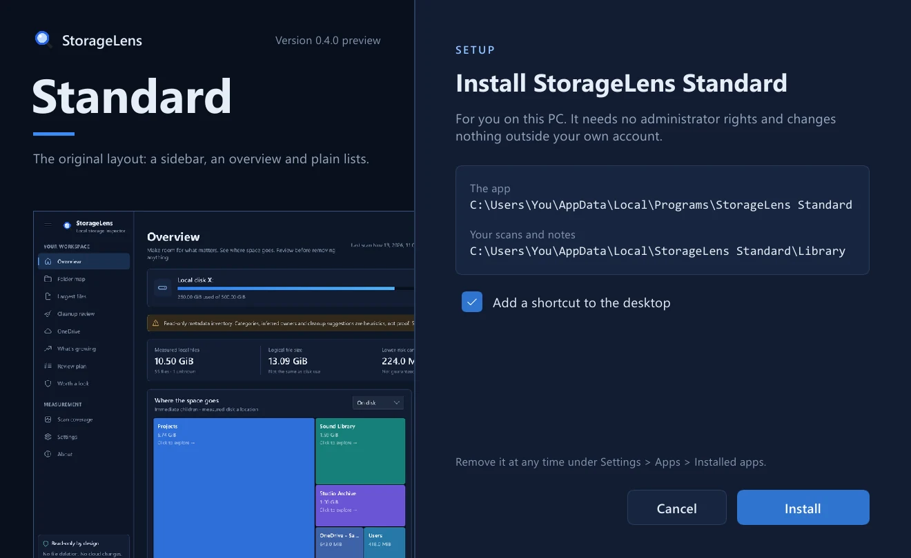

StandardA sidebar, a page, a details panel.Press 1 to 7, or use the bar below
App 1 of 7
Standard
A sidebar, a page, a details panel.
The original layout, and the one the other six are checked against. Not sure which to pick? Start here.
A sidebar of views
Eleven views in two groups, one click each. It folds to a rail of icons when the window is narrow.
One page at a time
A header, the drive, then the answer: a map, a list or a plan.
Details slide in
Inspect any file or folder in a panel from the right: what it is, and why it is flagged.
The Assistant docks beside it
Ask in your own words. The answer is a page, and a banner says who is driving.
Largest files, with the details of one file

A page the Assistant put together
One scan
The same answer, drawn seven ways.
Standard
Find Projects in each: 6.74 GiB, whatever draws it.
7apps, one per layout
49pairs of layout and theme, a theme picker in every app
1scan behind all of them
0files read to draw any of it
What stays
Measures everything, changes nothing. In any layout.
A look is a frame around the same pages and the same engine. None of them adds a way to touch your files.
Read-only, whatever it wears
StorageLens never deletes, moves or opens your files, and never downloads what OneDrive keeps online. No layout has a delete button.
One engine, one set of numbers
Every number in every layout comes from the scan. A dial, a tile, a column and a tower of the same folder all say the same size.
The caution is part of the frame
“Read-only” and “heuristics, not proof” stay on screen in each look: an annunciator strip, a status line, a pill in the frame.
You see who is driving
When the Assistant or another agent puts something on screen, each layout says so in its own way: a banner, a pill, a bar. The AI never acts on a file.
Under every look
Make sense of everything on your PC.
You used to guess what was filling your drive and what any of it meant. StorageLens reads names, sizes and dates, never what is in your files, and answers three questions.
Where did my space go?
A map of every drive, the largest files, and what grew since the last scan, each folder sized by what it really takes on disk.
What is this, and can it go?
For well-known Windows, developer and app folders: what it is, the supported way to free its space and what not to do. You record decisions; nothing runs.
Can I just ask?
The Assistant answers in your own words with a model on your PC, off until you turn it on. It answers by showing a page whose numbers come from your scan.
Free and Pro
Free today. Pro when it's ready.
Available now
StorageLens Free
Seven apps, one per layout. For personal use on Windows.
Every local drive, with the map, the eight views and CSV export
What grew since the last scan, and each folder's size over your last 10 scans
All the local AI: the Assistant with a model on your PC, or a cloud model with your own key
Worth a look: name and place signals, and Microsoft Defender's history
A review plan with your notes. Nothing is changed on disk
Seven layouts to choose from, each with a theme picker in its header
A private deployment in the cloud. Your scan goes to a deployment that is yours alone, AI looks it over, and what it found comes back to your PC
You choose what it sees: totals only, folder names or full paths. Never what is in your files
One question across all your PCs, and a hosted model with no key to set up
Guarded clean-up: only what you confirmed, with a preview, a log and undo. The AI still never acts
Not available yet
Give every gigabyte a name.
StorageLens is free, and comes as seven apps: one per layout, over the same read-only engine. Each installs for your Windows account only, needs no administrator rights, and keeps everything it knows in one folder on your PC.
38 MB · version 0.4.0 preview, 24 November 2026 · Windows 11, 64-bit · free
What happens next
Windows will ask you to confirm. The files are not code-signed yet, so on a downloaded copy Windows shows “Windows protected your PC”: choose More info, then Run anyway. Your browser may also say the file is not commonly downloaded: choose to keep it. Windows asks this of any new unsigned program; it says nothing about what the program does.
Setup wears the look you chose. It shows where the app and your scans will go, and installs for your Windows account only.
Press Start first scan. A new install starts empty. A scan reads names, sizes, dates and OneDrive states, never what is in a file.
Later. To update, download the newer file and open it: your scans and notes stay, and the app does not check for updates itself. To remove it, use Windows Settings > Apps > Installed apps; your scans and notes are kept until you delete that folder yourself.

All seven apps
StorageLens Standard
The original layout: a sidebar, an overview and plain lists.
The button above gives you the look this page is wearing. Not sure which? Start with Standard: it is the layout the other six are checked against. You can add another later: they install side by side, and each keeps its own scans.